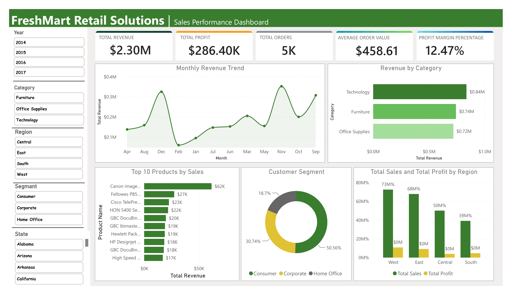

FreshMart Retail Solutions: sales performance dashboard
Power BI, Power Query, DAX
A three-page dashboard for a retail chain, covering sales trends, product insights and customer segments. I cleaned the raw sales data in Power Query and wrote the DAX measures behind every KPI.
- $2.30M revenue
- $286.40K profit
- 5K orders
- $458.61 average order
- 12.47% margin

Page 1: revenue trend, category mix, top products, customer segments and regional profit.
- Revenue grew from $484K in 2014 to $733K in 2017, with a 20.4% jump in the last year.
- Technology and Office Supplies earn about 17% margin. Furniture earns only 2.5%, because Tables and Bookcases lose money.
- Orders discounted 30% or more lose $97 on average, so I recommend capping discounts on those sub-categories.